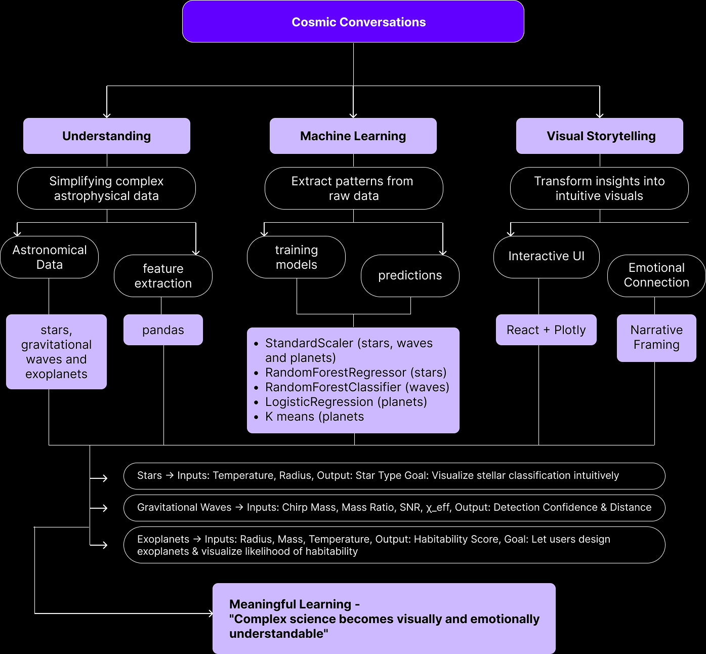
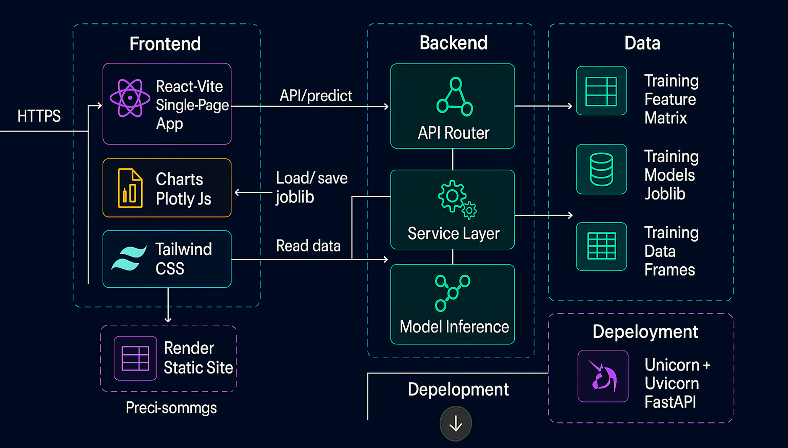

Cosmic Conversion
Cosmic Conversion is a full-stack machine learning project that transforms open-source scientific data into an interactive platform with three modules: Stars (spectral classification), Waves (gravitational analysis), and Worlds (exoplanet habitability). Originally prototyped with Plotly Dash, the platform was rebuilt using a Python backend and React.js frontend, enabling scalable and modular integration of multiple machine learning models. The project demonstrates how complex scientific data can be made accessible and engaging through interactive design and visualization.
Problem Statement
Astronomical datasets are often large, inconsistent, and difficult to interpret, limiting their accessibility to the broader scientific community and enthusiasts. The challenge was to build a system that could clean, normalize, and merge multiple open-source datasets, train machine learning models (Random Forest, Logistic Regression, Linear Regression, K-Means), and present them in an intuitive, interactive platform. Additionally, integrating backend ML logic with a React.js frontend while maintaining high performance and clarity in data visualization posed a significant engineering challenge.
Concept Map
Main Tools
- Python (FastAPI): Backend data processing and ML integration
- React / Vite / Tailwind: Modular, responsive frontend
- scikit-learn: Implementation of multiple ML algorithms
- Plotly Dash: Early-stage prototyping and visualization
- VS Code: Unified backend and frontend development
- Render: Deployment and live testing platform
Project Architecture
The Design
Stars Module
- Goal: Predict stellar properties from observed light using interactive spectral classification visualizations.
- Models: RandomForestRegressor & Linear Regression (optional SVC).
- Inputs: Color Index, Magnitude, Luminosity.
- Outputs: Temperature (K), Radius (R), Spectral Type.
- Feature: Interpretable predictions and HR diagram placement for stars.
Waves Module
- Goal: Detect gravitational-wave signals and estimate distances from cosmic events.
- Models: Random Forest Classifier (signal/noise), Random Forest Regressor (distance estimation).
- Inputs: chirp_mass, mass_ratio, snr, chi_eff, p_astro.
- Outputs: Signal confidence (0–1) and distance (Mpc).
- Feature: Identify real astrophysical events in noisy gravitational-wave data.
Worlds Module
- Goal: Predict exoplanet habitability using key planetary parameters.
- Models: Logistic Regression (classification), K-Means (clustering), GradientBoostingClassifier.
- Inputs: Radius, surface temperature, distance from star, luminosity, pressure, atmosphere.
- Outputs: Habitability score (0–1) and classification (habitable/uninhabitable).
- Feature: Assess potential life-supporting exoplanets from structured planetary data.
Full Website Demo: Demonstration of the complete interactive platform.
Challenges and Insights
- Large and inconsistent datasets required extensive cleaning and validation.
- Integration of ML pipelines with the React frontend caused performance and communication challenges.
- Balancing analytical accuracy with clear, intuitive visualization demanded iterative testing.
- Strengthened teamwork and modular development skills, while designing a data-driven, scientifically-informed UX.
Future Scope
Future developments for Cosmic Conversion include expanding to real-time astronomical data streams, integrating AI-driven pattern detection, and refining model accuracy to support broader scientific exploration. This would enhance the platform's utility for researchers and enthusiasts, enabling dynamic discovery and analysis of astrophysical phenomena.